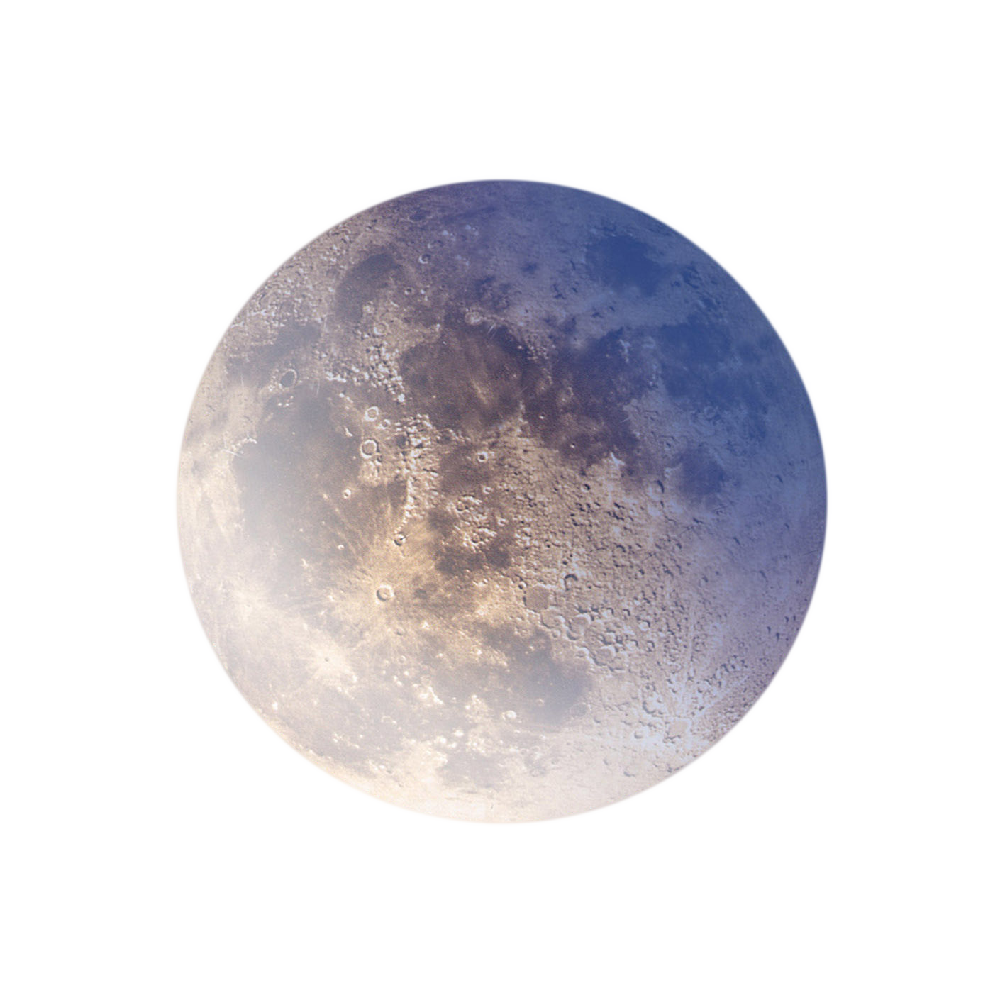

Moon
At Day|
106°C
At Night|
-183°C
The moon's mass is 7.35 x 1022 kg.
About 1.2% of Earth's mass. Put another way, Earth weighs
81 times
more than the moon.
The moon's density is 3.34 grams per cubic centimeter (3.34 g/cm3).
4.53 billion years
The Moon is Earth's only natural satellite. At about one-quarter the diameter of Earth, it is the
largest natural satellite in the
Solar System relative to the size of a major planet, the
fifth
largest satellite in the Solar System overall, and larger than any known dwarf planet.
On average, the Earth and Moon are about 150 million kilometres (or 93 million miles) from the Sun!
That distance is so large that it takes light eight minutes to reach us
(remember that light travels
at 300,000 kilometres per second).